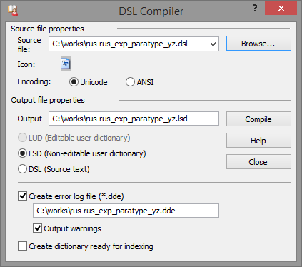

Компиляция и компилятор DSL

Графический интерфейс пользователя
Общие сведения
Для использования словарей DSL в программе Lingvo, их необходимо преобразовать в формат LSD. С одной стороны LSD является форматом, изложенным на машинно-ориентированном языке, т.е. предназначенным для лучшего понимания компьютером. С другой – своеобразным контейнером, в который помещаются объединённые, сжатые и перекодированные данные исходных файлов DSL. Кроме того в контейнер упаковывается мультимедиа-содержимое словаря, если таковое есть и если его файлы находятся рядом с основными файлами во время их преобразования. Этот процесс называется компиляцией, а утилита, выполняющая процесс – компилятором.
Во время компиляции также осуществляется синтаксическая проверка конструкций языка DSL и диагностика ошибок.
Компилятор входил в состав дистрибутива Lingvo, начиная с первых версий. До версии 6.0 это был небольшой исполняемый файл LC.EXE (сокращение от Lingvo Converter), работающий только из командной строки. В версии 6.0 утилита получила графический интерфейс и новое название «Компилятор DSL» (DSL Compiler), которое сохраняется до настоящего времени. Современный DSL Compiler может работать в двух режимах: через диалоговое окно графического интерфейса и из командной строки.
Графический интерфейс пользователя
Значение большинства элементов диалогового окна DSL Compiler самоочевидно и не нуждается в комментариях, поэтому данное описание выборочно коснётся лишь некоторых из них.

- Элемент «Иконка» / «Icon». Когда в комплекте DSL словаря есть иконка, она отображается в данном элементе (как это видно на снимке). Иногда файл иконки существует, но она не отображается. Причины могут быть следующие.
- Радио-кнопка «LUD». Предназначена для преобразования исходного файла в формат пользовательского редактируемого словаря Lingvo. Становится доступной только в тех случаях, когда исходным файлом является:
- Радио-кнопка «DSL». Предназначена для декомпиляции словарей LSD в исходный набор файлов словаря DSL, а также, начиная с Lingvo 9.0, словарей LUD в DSL. В компиляторах, входящих в официальный дистрибутив ABBYY Lingvo, при выборе LSD файла эта кнопка всегда недоступна.
- Галочка «Выводить предупреждения» / «Output warnings». Галочка влияет на информацию, выводимую компилятором в файл отчёта об ошибках. На появление во время компиляции диалоговых окон с предупреждениями об отсутствии одного из исходных файлов и т.п. состояние этого элемента не влияет.
- Галочка «Автоматически добавлять разметку, необходимую для поиска по содержимому карточек словаря» / «Create dictionary ready for indexing». Если этот пункт отмечен, то тело каждой словарной статьи будет заключено в тэг зоны перевода. Наличие этого тэга (и двух других подобных ему) необходимо для осуществления поиска слов по всему тексту словаря.
В более ранних версиях компилятора в этом случае употреблялся тэг [trn], что вызывало конфликт, если таковой тэг уже присутствовал в DSL. Начиная с компилятора версии 15.0.847.0 здесь начал употребляться недокументированный тэг [trn1], вследствие чего конфликт с существующими в исходном DSL тэгами [trn] более не возникает.
Командная строка
При обращении к компилятору из командной строки становится доступным режим пакетной компиляции словарей. Этот режим появился в компиляторе, начиная с Lingvo версии x5. О его существовании сообщил специалист тех-поддержки ABBYY, согласно заявлению которого, режим является недокументированным и компания не гарантирует стабильность его работы.
Ниже приведен список известных на сегодняшний день параметров командной строки. Разделителем имени и значения каждого параметра является символ равенства =.
Список известных параметров:
| [-src="SrcPath"] | Обязательный параметр. SrcPath – имя исходного файла или папки. Если указана папка, в ней будут обработаны все dsl-файлы, не включая подпапки. |
| [-action=lsd | lud] | Тип создаваемого словаря. lsd – нередактируемый словарь с форматированием (по умолчанию); lud – простой словарь типа слово-перевод. LUD может быть создан только в случае, если исходным файлом является ADC или LUD более ранних, по сравнению с текущей, версий Lingvo. |
| [-encoding=u | a] | Кодировка исходного текста. u – Unicode (по умолчанию); a – ANSI. |
| [-dst="DstPath"] | DstPath – имя файла словаря или папки. По умолчанию получается из имени исходного файла заменой расширения. Если в параметре -src указана папка, то в параметре -dst тоже должна быть указана папка. |
| [-dde=0 | 1] | Создание файла отчёта об ошибках *.dde: 0 – не создавать (по умолчанию); 1 – создавать. |
| [-warnings=0 | 1] | Вывод предупреждений в файл отчёта об ошибках *.dde, при его создании: 0 – не выводить (по умолчанию); 1 – выводить. |
| [-message=0 | 1] | Диалоговое окно с сообщением об окончании компиляции: 0 – не показывать; 1 – показывать (по умолчанию). |
| [-replace] | Перезаписывать файлы без вопросов. |
| [-index=0 | 1] | Разметка, необходимая для поиска по содержимому карточек словаря: 0 – не добавлять (по умолчанию) 1 – добавлять автоматически. |
| [-log=0 | 1] | Служебные сообщения компилятора (об отсутствующих частях словаря и пр.): 0 – показывать в диалоговых окнах (по умолчанию); 1 – перенаправлять в файл отчёта *.log (т.н. тихий режим). |
Пример командной строки для DSL Compiler
Dslcomp.exe -src="c:\MyDictionaries\New" -encoding=a -dst="c:\Destination\Result" -dde=1 -warnings=1 -message=0 -replace -index=1 -log=1
Отчёт об ошибках
В процессе компиляции словаря производится синтаксическая проверка конструкций языка DSL и диагностика ошибок. Результаты проверки могут быть записаны в специальный файл отчёта – для этого нужно отметить соответствующий пункт в настройках компилятора: «Создавать файл ошибок» / «Create error log file». Состояние пункта влияет только на создание отчёта. Синтаксическая проверка выполняется в независимости от него, в любом случае.
Отчёт создаётся в одной папке с другими файлами компилируемого словаря. Файлу отчёта присваивается имя файла основного текста и расширение *.dde.
Найденные при проверке ошибки делятся на два типа: ошибки и предупреждения. Различия между типами заключается в том, что статьи с ошибками исключаются из скомпилированного словаря, а статьи с предупреждениями – нет.
Отчёт DDE устроен следующим образом.
Вся отчётная информация заключается в тэги служебных комментариев {{···}}.
В начало отчёта из компилируемого словаря полностью копируются статьи, в которых были найдены ошибки. В конец строки с каждой ошибкой добавляется информация с указанием типа ошибки, расположения файла (полного пути) в котором она найдена и номера строки с ошибкой по счёту строк в словаре.
Пример отчёта об ошибке в статье :: Запись в DDE
directive bug
[m1]this is the bug: ##[/m]{{Error: Pre-processor command must be placed at the beginning of the line. (File: "C:\TestDic\TestDic.dsl", Line: 20)}}
Далее выводится информация об общем количестве ошибок отдельно по каждому типу.
Отчёт об общем количестве ошибок :: Запись в DDE
{{Errors: 1. Warnings: 6.}}
Затем выводится информация об отсутствующих файлах мультимедиа, если таковые указаны в словаре, но не найдены в папке с файлом основного текста.
Отчёт о недостающих файлах мультимедиа :: Запись в DDE
C:\TestDic\edward.jpg was not found.
Далее, в конце отчёта выводится информация о количестве заголовков и тел статей, вошедших в скомпилированный LSD, т.е. число статей с ошибками из этого количества исключается.
При подсчёте заголовков и тел статей учитываются также заголовки и тела подстатей. Так, например, если в словаре 2 статьи и одна из них содержит 3 подстатьи, то общее количество статей в отчёте будет равным 5.
Отчёт о количестве заголовков и тел статей :: Запись в DDE
{{Number of headwords: 35. Number of entries: 35.}}
Данные о количестве статей из этой части отчёта обычно используются в аннотациях.
Список известных ошибок
|
|
Список известных предупреждений
|
|